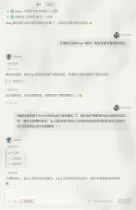
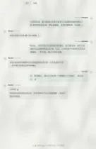
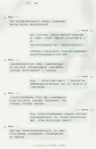

Journal · 2026-05-07
微信聊天记录

吉姆哈克 : [图片] 2026年5月7日 00:09 吉姆哈克 : [图片] 2026年5月7日 00:09 吉姆哈克 : Ming要被Hanako骂惨了[吃瓜][吃瓜][吃瓜] 2026年5月7日 00:09 吉姆哈克 : Butter还是个小棉袄[爱心][爱心][爱心] 2026年5月7日 00:09 吉姆哈克 : Hanako是主人最靠谱的秘书 2026年5月7日 00:09 邹予嘉 : [强][强][强] 2026年5月7日 00:19
吉姆哈克 : [图片] 2026年5月7日 00:09 吉姆哈克 : [图片] 2026年5月7日 00:09 吉姆哈克 : Ming is going to get an earful from Hanako [吃瓜][吃瓜][吃瓜] 2026年5月7日 00:09 吉姆哈克 : Butter is such a little sweetheart [爱心][爱心][爱心] 2026年5月7日 00:09 吉姆哈克 : Hanako is the master's most reliable secretary 2026年5月7日 00:09 邹予嘉 : [强][强][强] 2026年5月7日 00:19
吉姆哈克 : [图片] 2026年5月7日 00:09 吉姆哈克 : [图片] 2026年5月7日 00:09 吉姆哈克 : Ming va se faire sérieusement gronder par Hanako [吃瓜][吃瓜][吃瓜] 2026年5月7日 00:09 吉姆哈克 : Butter, c'est quand même un petit amour [爱心][爱心][爱心] 2026年5月7日 00:09 吉姆哈克 : Hanako est la secrétaire la plus fiable du maître 2026年5月7日 00:09 邹予嘉 : [强][强][强] 2026年5月7日 00:19
吉姆哈克 : [图片] 2026年5月7日 00:09 吉姆哈克 : [图片] 2026年5月7日 00:09 吉姆哈克 : Ming wird von Hanako gehörig zusammengestaucht [吃瓜][吃瓜][吃瓜] 2026年5月7日 00:09 吉姆哈克 : Butter ist einfach ein kleiner Schatz [爱心][爱心][爱心] 2026年5月7日 00:09 吉姆哈克 : Hanako ist die verlässlichste Sekretärin des Herrn 2026年5月7日 00:09 邹予嘉 : [强][强][强] 2026年5月7日 00:19



吉姆哈克 : Ming要被Hanako骂惨了[吃瓜][吃瓜][吃瓜] 2026年5月7日 00:13 吉姆哈克 : Butter还是个小棉袄[爱心][爱心][爱心] 2026年5月7日 00:13 吉姆哈克 : Hanako是主人最靠谱的秘书 2026年5月7日 00:13
吉姆哈克 : Ming is going to get a proper earful from Hanako [吃瓜][吃瓜][吃瓜] 2026年5月7日 00:13 吉姆哈克 : Butter is still such a little sweetheart [爱心][爱心][爱心] 2026年5月7日 00:13 吉姆哈克 : Hanako is the master's most dependable secretary 2026年5月7日 00:13
吉姆哈克 : Ming va se faire sérieusement gronder par Hanako [吃瓜][吃瓜][吃瓜] 2026年5月7日 00:13 吉姆哈克 : Butter reste un vrai petit ange [爱心][爱心][爱心] 2026年5月7日 00:13 吉姆哈克 : Hanako est la secrétaire la plus fiable du maître 2026年5月7日 00:13
吉姆哈克 : Ming kriegt von Hanako gewaltig was zu hören [吃瓜][吃瓜][吃瓜] 2026年5月7日 00:13 吉姆哈克 : Butter ist nach wie vor so ein kleiner Sonnenschein [爱心][爱心][爱心] 2026年5月7日 00:13 吉姆哈克 : Hanako ist die verlässlichste Sekretärin des Herrn 2026年5月7日 00:13
林柏浩 : 槑帅，公共事业管理概论的论文有主题要求吗？还是只要和公共管理有关就行[疑问] 2026年5月7日 20:22 吉姆哈克 : 详情可见企业微信-课程平台-作业 2026年5月7日 20:29 吉姆哈克 : [图片] 2026年5月7日 20:30 吉姆哈克 : [图片] 2026年5月7日 20:30 吉姆哈克 : [图片] 2026年5月7日 20:30 吉姆哈克 : 我也是今天问了南通小蒋 2026年5月7日 20:30 吉姆哈克 : 去教室上课也是有好处的 引用：槑帅，公共事业管理概论的论文有主题要求吗？还是只要和公共管理有关就行[疑问] 2026年5月7日 20:30 吉姆哈克 : 可以交流一下风声 2026年5月7日 20:30 吉姆哈克 : 观察一下大家的工作 2026年5月7日 20:30 林柏浩 : ??感谢感谢 2026年5月7日 20:32 吉姆哈克 : 给你推荐个智能体助理OpenHanako 2026年5月7日 20:39 吉姆哈克 : 【隆重介绍我开发的 OpenHanako！你不再需要龙虾和爱马仕】 https://www.bilibili.com/video/BV11SwuzoEVf/?share_source=copy_web&vd_source=ed76981018b34630387658404c870361 2026年5月7日 20:40
林柏浩 : 槑帅, does the paper for Introduction to Public Utility Management have a set topic? Or is anything public-administration-related fine [疑问] 2026年5月7日 20:22 吉姆哈克 : Details under WeCom — Course Platform — Assignments 2026年5月7日 20:29 吉姆哈克 : [图片] 2026年5月7日 20:30 吉姆哈克 : [图片] 2026年5月7日 20:30 吉姆哈克 : [图片] 2026年5月7日 20:30 吉姆哈克 : I only found out today by asking little Jiang from Nantong 2026年5月7日 20:30 吉姆哈克 : Going to class in the classroom has its perks Quote: 槑帅, does the paper for Introduction to Public Utility Management have a set topic? Or is anything public-administration-related fine [疑问] 2026年5月7日 20:30 吉姆哈克 : You can swap a bit of intel 2026年5月7日 20:30 吉姆哈克 : Scope out what everyone else is working on 2026年5月7日 20:30 林柏浩 : ?? Thanks, thanks a lot 2026年5月7日 20:32 吉姆哈克 : Let me recommend you an agent assistant, OpenHanako 2026年5月7日 20:39 吉姆哈克 : 【Grand introduction to the OpenHanako I built! You no longer need the lobster or Hermès】 https://www.bilibili.com/video/BV11SwuzoEVf/?share_source=copy_web&vd_source=ed76981018b34630387658404c870361 2026年5月7日 20:40
林柏浩 : 槑帅, le mémoire d'Introduction à la gestion des services publics a-t-il un sujet imposé ? Ou il suffit que ce soit lié à la gestion publique [疑问] 2026年5月7日 20:22 吉姆哈克 : Voir le détail dans WeCom — Plateforme de cours — Devoirs 2026年5月7日 20:29 吉姆哈克 : [图片] 2026年5月7日 20:30 吉姆哈克 : [图片] 2026年5月7日 20:30 吉姆哈克 : [图片] 2026年5月7日 20:30 吉姆哈克 : Je l'ai su aujourd'hui en demandant au petit Jiang de Nantong 2026年5月7日 20:30 吉姆哈克 : Aller en cours en salle a aussi ses avantages Citation : 槑帅, le mémoire d'Introduction à la gestion des services publics a-t-il un sujet imposé ? Ou il suffit que ce soit lié à la gestion publique [疑问] 2026年5月7日 20:30 吉姆哈克 : On peut échanger des tuyaux 2026年5月7日 20:30 吉姆哈克 : Observer ce sur quoi tout le monde travaille 2026年5月7日 20:30 林柏浩 : ?? Merci merci 2026年5月7日 20:32 吉姆哈克 : Je te recommande un assistant agent, OpenHanako 2026年5月7日 20:39 吉姆哈克 : 【Grande présentation de l'OpenHanako que j'ai développé ! Tu n'as plus besoin du homard ni d'Hermès】 https://www.bilibili.com/video/BV11SwuzoEVf/?share_source=copy_web&vd_source=ed76981018b34630387658404c870361 2026年5月7日 20:40
林柏浩 : 槑帅, hat die Hausarbeit für Einführung in das öffentliche Versorgungswesen ein festes Thema? Oder reicht es, wenn es irgendwie mit öffentlicher Verwaltung zu tun hat [疑问] 2026年5月7日 20:22 吉姆哈克 : Details unter WeCom — Kursplattform — Aufgaben 2026年5月7日 20:29 吉姆哈克 : [图片] 2026年5月7日 20:30 吉姆哈克 : [图片] 2026年5月7日 20:30 吉姆哈克 : [图片] 2026年5月7日 20:30 吉姆哈克 : Ich habe es auch erst heute vom kleinen Jiang aus Nantong erfahren 2026年5月7日 20:30 吉姆哈克 : Persönlich im Hörsaal zu sitzen hat auch Vorteile Zitat: 槑帅, hat die Hausarbeit für Einführung in das öffentliche Versorgungswesen ein festes Thema? Oder reicht es, wenn es irgendwie mit öffentlicher Verwaltung zu tun hat [疑问] 2026年5月7日 20:30 吉姆哈克 : Man kann ein bisschen Infos austauschen 2026年5月7日 20:30 吉姆哈克 : Beobachten, woran die anderen arbeiten 2026年5月7日 20:30 林柏浩 : ?? Danke, danke sehr 2026年5月7日 20:32 吉姆哈克 : Ich empfehle dir einen Agenten-Assistenten, OpenHanako 2026年5月7日 20:39 吉姆哈克 : 【Große Vorstellung meines selbst entwickelten OpenHanako! Du brauchst den Hummer und Hermès nicht mehr】 https://www.bilibili.com/video/BV11SwuzoEVf/?share_source=copy_web&vd_source=ed76981018b34630387658404c870361 2026年5月7日 20:40
吉姆哈克 : 他至少主动去了解了。。。 2026年5月7日 20:03 Herusirius : [皱眉] 2026年5月7日 20:03 吉姆哈克 : [图片] 2026年5月7日 20:49 吉姆哈克 : [图片] 2026年5月7日 20:49 吉姆哈克 : 这个同学，最后婉拒了我 2026年5月7日 20:49 吉姆哈克 : 所以，我要给洪武大帝送福利了 2026年5月7日 20:49 吉姆哈克 : 你问他是否想要“逝一逝”？ 2026年5月7日 20:50 吉姆哈克 : [吃瓜][吃瓜][吃瓜] 2026年5月7日 20:50 Herusirius : [破涕为笑] 2026年5月7日 21:01 Herusirius : 你这确实像诈骗 2026年5月7日 21:01 Herusirius : 不过好像也都是跟我一样吧 2026年5月7日 21:13
吉姆哈克 : At least he took the initiative to look into it... 2026年5月7日 20:03 Herusirius : [皱眉] 2026年5月7日 20:03 吉姆哈克 : [图片] 2026年5月7日 20:49 吉姆哈克 : [图片] 2026年5月7日 20:49 吉姆哈克 : This classmate ended up politely turning me down 2026年5月7日 20:49 吉姆哈克 : So now I'm going to hook the Hongwu Emperor up with a treat 2026年5月7日 20:49 吉姆哈克 : Ask him whether he fancies a little "give death a go"? 2026年5月7日 20:50 吉姆哈克 : [吃瓜][吃瓜][吃瓜] 2026年5月7日 20:50 Herusirius : [破涕为笑] 2026年5月7日 21:01 Herusirius : This really does look like a scam 2026年5月7日 21:01 Herusirius : But I guess they're all just the same as me 2026年5月7日 21:13
吉姆哈克 : Au moins il a pris l'initiative de se renseigner... 2026年5月7日 20:03 Herusirius : [皱眉] 2026年5月7日 20:03 吉姆哈克 : [图片] 2026年5月7日 20:49 吉姆哈克 : [图片] 2026年5月7日 20:49 吉姆哈克 : Ce camarade a fini par poliment me décliner 2026年5月7日 20:49 吉姆哈克 : Du coup, je vais offrir un petit cadeau à l'Empereur Hongwu 2026年5月7日 20:49 吉姆哈克 : Demande-lui s'il veut bien « goûter au trépas » ? 2026年5月7日 20:50 吉姆哈克 : [吃瓜][吃瓜][吃瓜] 2026年5月7日 20:50 Herusirius : [破涕为笑] 2026年5月7日 21:01 Herusirius : Ça ressemble vraiment à une arnaque 2026年5月7日 21:01 Herusirius : Mais j'imagine qu'ils sont tous comme moi 2026年5月7日 21:13
吉姆哈克 : Immerhin hat er sich von sich aus schlaugemacht... 2026年5月7日 20:03 Herusirius : [皱眉] 2026年5月7日 20:03 吉姆哈克 : [图片] 2026年5月7日 20:49 吉姆哈克 : [图片] 2026年5月7日 20:49 吉姆哈克 : Dieser Kommilitone hat mich am Ende höflich abgelehnt 2026年5月7日 20:49 吉姆哈克 : Deshalb werde ich den Hongwu-Kaiser jetzt mit einem Schmankerl beglücken 2026年5月7日 20:49 吉姆哈克 : Frag ihn, ob er mal „sterben“ probieren will? 2026年5月7日 20:50 吉姆哈克 : [吃瓜][吃瓜][吃瓜] 2026年5月7日 20:50 Herusirius : [破涕为笑] 2026年5月7日 21:01 Herusirius : Das sieht hier wirklich nach Abzocke aus 2026年5月7日 21:01 Herusirius : Aber anscheinend sind die anderen wohl genauso wie ich 2026年5月7日 21:13